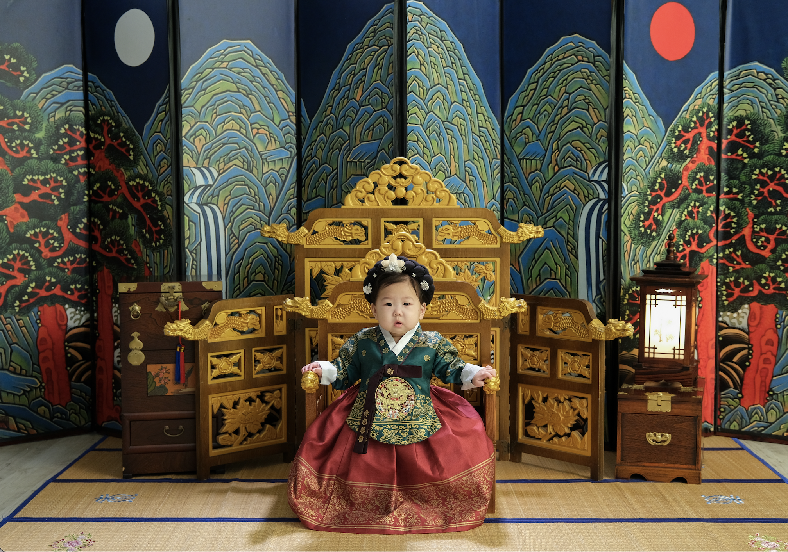

Happy Birthday
이현이의 첫번째 생일 파티에
특별하고 사랑하는 여러분을 초대합니다 💕
2026.10.03 토요일 오후 2시
서울 광진구 능동로 90 더클래식 500 B동 1층
경복궁
•
2호선
건대입구역 5번 출구 도보 3분
•
7호선
건대입구역 4번 출구 도보 5분
네이버 지도 보기
카카오맵 보기
이현이의 1년이 담긴 영상 감상하기
브라우저가 비디오 태그를 지원하지 않습니다.
아빠
김경현
💖
엄마
권재현